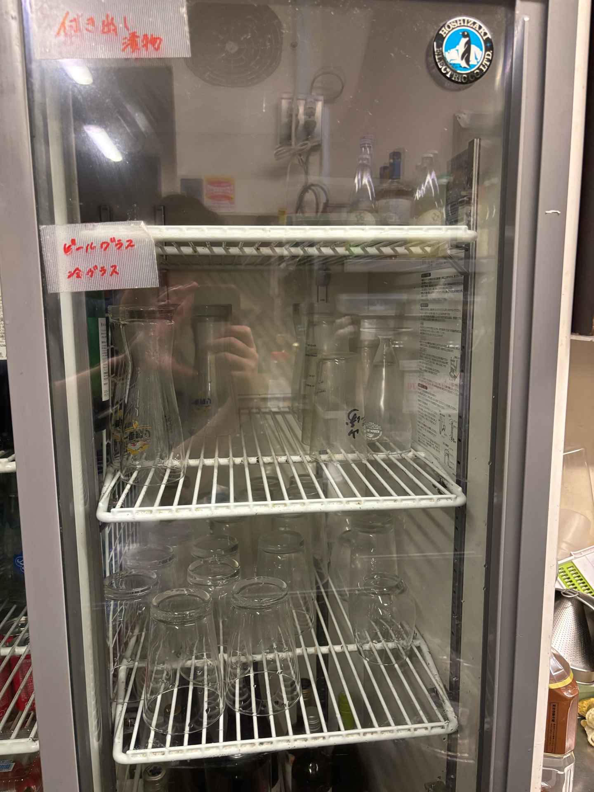
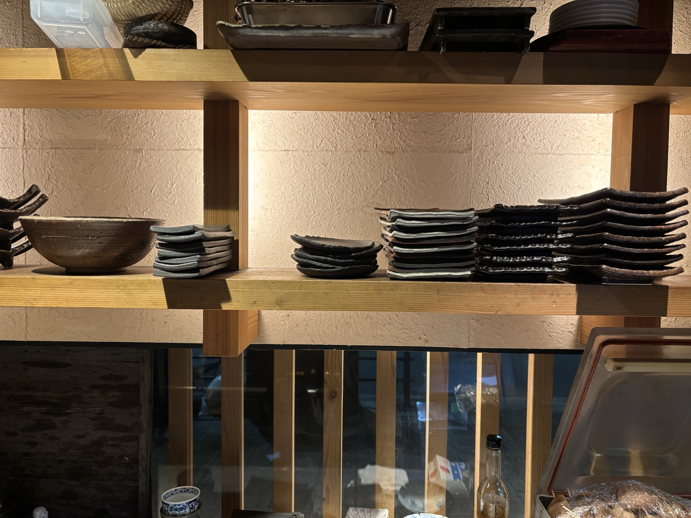
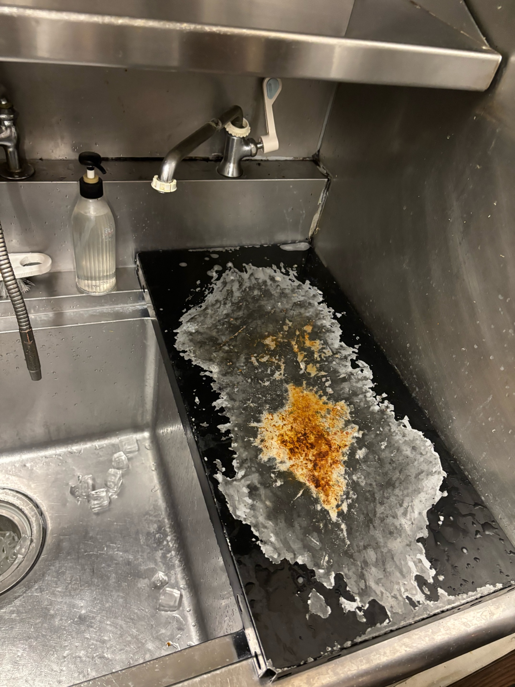
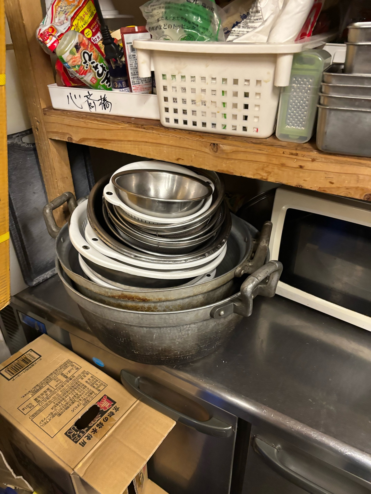
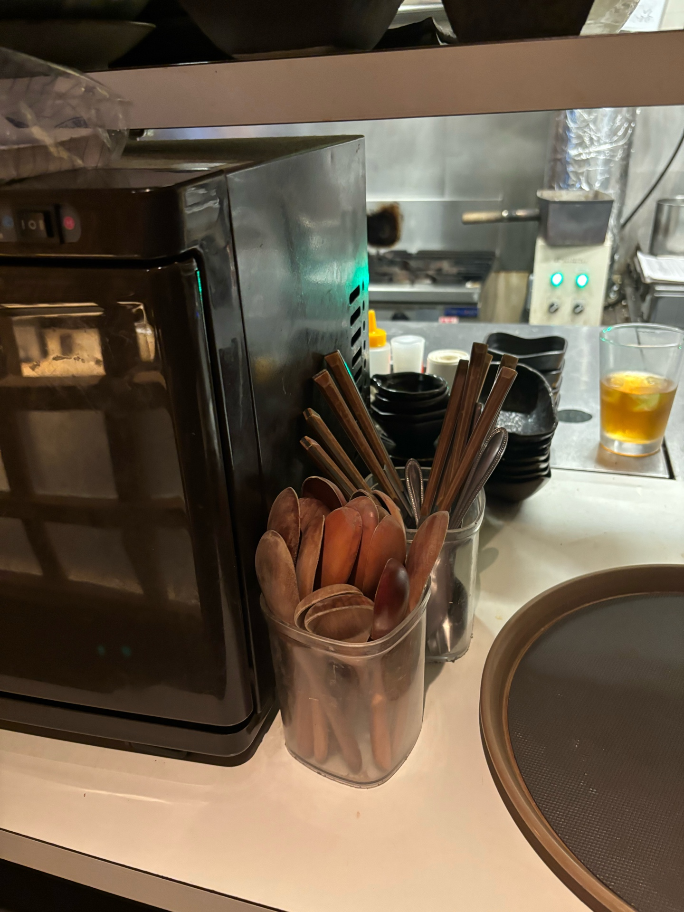
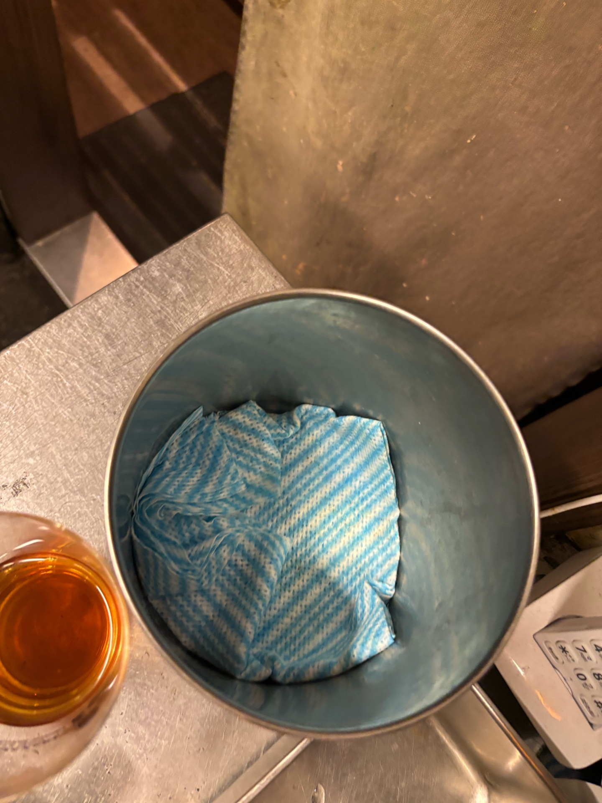

洗い場マニュアル
焼とりporc（ぽー）難波｜タイミー向け
分からないことは必ずスタッフに聞いてください。
グラスの洗い方
- グラス専用スポンジで洗う
- 洗ったら必ず食洗機へ
- 食洗機後はラックに伏せて粗熱を取る

ドリンクスタッフがいないタイミングで冷蔵庫に収納してください。


熱いグラスにドリンクは絶対に入れないでください
焼物のお皿
- すべて予洗いしてから食洗機
- タレ・焦げは特に念入りに
焼き台で使うお皿は背中側の木製棚へ戻してください。


焼き網は洗剤をつけてブラシでこすり洗いしてから食洗機に入れてください。
前キッチンのお皿・小皿
焼き台前方のカウンター棚に収納してください。


忙しそうな場合は洗い場にまとめて、スタッフに声をかけてください。
ボール・調理器具
- ボールはシンク横のラックで乾燥
- タオルで拭いて戻してもOK



ボールがいっぱいになり邪魔な場合は、青いタオルで水滴を完全に拭き取った後、ボール収納場所に戻して頂いてもOKです。
詳しくはスタッフに聞いてください。
詳しくはスタッフに聞いてください。
タッパー・バット
- 黄色いカゴに伏せて乾かす
- 必ず洗剤で四角までこすり洗いしてから食洗機（生物使用）


バットを濡れたまま重ねたり、上向きでカゴに入れると水滴が残り、食中毒の原因となります。必ず伏せて乾かしてください。
理解できない場合は社員に確認してください。
理解できない場合は社員に確認してください。
スプーン・箸
洗ったスプーン・箸は、レジ横のカップに立てて乾かしてください。

スプーンと箸は別々のカップに分けて収納してください。
洗い場の棚
洗い場の上棚は食洗機後の食器を一時置きする場所です。


棚の上に食器が溜まってきたら、スタッフに声をかけてください。
バッシング
可能であれば、お客様退店後にお皿とグラスを下げてください。
テーブルの拭き上げとお皿のセッティングはスタッフが行います。
洗い場スタッフの定位置
洗い場の横には製氷機があります。
ドリンクスタッフが頻繁に氷を取りに来ますので、製氷機の前を塞がないよう心がけてください。
作業中も周囲に気を配り、スタッフの動きを妨げないよう心がけて頂けると嬉しいです。
出勤・退勤用QRコード
出勤時・退勤時にこちらのQRコードを読み取ってください。

出勤時：業務開始前にQRコードを読み取り、チェックインを完了してください。
退勤時：業務終了後にQRコードを読み取り、チェックアウトを完了してください。
退勤時：業務終了後にQRコードを読み取り、チェックアウトを完了してください。